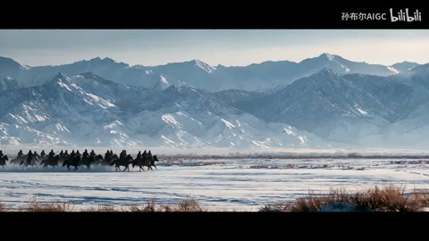

← 案例图谱H47 / 主要视觉研究样本
【预告之外】少女歌剧/聚光灯下的少女
旺仔大哥哥 · 4万播放快照 · <10万 · B站原作 ↗
后台机械和舞台场面之间的连接先建立期待，再给动作与反应；预告不只是把最强画面全部提前放出。
 约72.489秒 · 案例代表帧
约72.489秒 · 案例代表帧从画面里找依据
这一例先看什么
后台机械、燃料、舞台和人物反应组织预告语汇，远近景随动作递进，原舞台光效归源片。
审美判断
暗场入口、白书法与红印形成焦点，红橙亮点在工业段持续呼应，深暗细节需看原尺寸。
迁移到自己的题材
战斗、运动、竞速、预告、产品性能演示、情绪冲突的高潮。
教学提问：观众能指出谁在攻击、朝哪边、是否击中吗？哪些是原素材的动作，哪些才是新增剪接或合成？
带画面的分析单元
图像标出取样时间，对应观察中的关键状态。单帧不能独立证明运动，连续性请结合摘录。表达作用与应用场景是教学解读，复现路线是建议，不是原作者工程还原。
分析单元 01 / 0—9秒
暗场建立／书法节目标题／宽画幅黑边
实际观察
开头地铁场景暗调，3秒白色书法与小红印，6秒入口标牌，9秒火光。黑上下边贯穿多数场景。
表达作用（教学解读）
把阅读顺序变成观看顺序；用字重、位置与停留表达强调、犹豫或压迫。
具体应用场景
观点短片、歌词视觉、人物宣言、章节、情绪高潮；先决定哪些词必须读懂，哪些只是纹理。
复现建议（非原作者工程还原）
挑场景建立气氛，独立标题透明层配小红矩形章；画幅裁切保持主体。
直出判断：标题/黑边容易；场景来自原动画
常见误用：每个字都弹跳、整句停留不足、所有文字同时争主位。严肃叙事里无理由的回弹会削弱重量。
分析单元 02 / 9—39秒
工业物件插入／红光到炉火的色彩呼应
实际观察
信号灯、管线、列车、燃料面板、幕布和炉火镜头交替；红/橙局部亮点在暗场中突出。
表达作用（教学解读）
建立段落、材质和情绪的一致性；颜色变化可以承担信息，而不只是美化。
具体应用场景
多片源混剪、人物立场、回忆/现实区分、冷暖转折、品牌统一。
复现建议（非原作者工程还原）
按颜色与造型选择源镜头，统一黑位/饱和度；物件插入作为叙事连接。
直出判断：已有素材时剪接调色容易，原动画火焰/机械光效不能算UP后期新增
常见误用：所有镜头同一滤镜；肤色被破坏；饱和度代替焦点；色彩含义前后矛盾。
分析单元 03 / 45—61.9秒
从后台到舞台／交叉光束／蓝紫火焰
实际观察
45秒群像、54秒交叉蓝光、57秒阶梯，61.019起火焰柱由蓝渐紫红，人物动作连续。
表达作用（教学解读）
让能量、方向或主次可见；清楚的字芯和主体轮廓应保留。
具体应用场景
战斗、魔法、科技、梦境、舞台、标题强调、人物焦点。
复现建议（非原作者工程还原）
连接后台/舞台镜头；若另做光束可细长锥形透明层加辉光，火焰须素材或生成。
直出判断：选镜剪接容易，复杂舞台光/火焰多数可能继承源片
常见误用：只加大模糊半径；光源不影响周围环境；发光覆盖所有细节；把原片光效当新增。
分析单元 04 / 61.9—63秒
全身剪影→面部特写／近景随动作移动
实际观察
61.937换闭眼面部，之后构图向衣领、蝴蝶结移动；多个高差异帧仍是相邻部位和同动作。
表达作用（教学解读）
让一次画面替换有理由：继续动作、转换观点、给反应，或通过相似形状建立联系。
具体应用场景
动作、对话、运动、情绪混剪、多来源的视觉联系。
复现建议（非原作者工程还原）
从远景接特写，再保留原片镜头运动；代码裁切可模拟平移但不能重建人物转身。
直出判断：有素材时容易；不把原动画摄影移动算新增多刀
常见误用：只匹配颜色不顾动作阶段；方向突变；每次连接都加过渡掩盖问题。
分析单元 05 / 71.8—73.8秒
动作接动作／发光拖尾／前冲推近
实际观察
71.822脚部，71.989转舞台全身冲刺，72.656转人物迎面前冲，73.74转剑的特写；期间披风/花瓣/面部变大连续。
表达作用（教学解读）
让能量、方向或主次可见；清楚的字芯和主体轮廓应保留。
具体应用场景
战斗、魔法、科技、梦境、舞台、标题强调、人物焦点。
复现建议（非原作者工程还原）
根据运动方向与动作阶段选连接点；光拖尾可延迟帧叠加+辉光，花瓣粒子可另加，但此处来源未分离。
直出判断：剪点编排容易到中等；角色复杂动作和动画特效依赖原片
常见误用：只加大模糊半径；光源不影响周围环境；发光覆盖所有细节；把原片光效当新增。
分析单元 06 / 84—108秒
光点/花瓣／人物反应收尾／黑底标志
实际观察
84秒彩色光团，90秒人物近景，99秒蓝聚光灯，102秒角色正面，105秒黑底白标志。
表达作用（教学解读）
用运动方向、尺度和密度建立空气、空间或情绪；装饰层应服务焦点。
具体应用场景
回忆、季节、梦幻、寒冷、散场、能量爆发、文本聚散。
复现建议（非原作者工程还原）
动作后接反应和停留镜头，最后淡出/硬接黑底logo；已有花瓣与灯光保留。
直出判断：剪接与logo容易，原片美术不等代码可凭空复制
常见误用：平均铺满；近远粒子大小与模糊无差别；粒子挡脸；用程序火星冒充纪实拍摄。
用连续画面核对
保留原研究的多段局部摘录。片段含音轨不代表已听审；本资料不评价音乐卡点或对白节奏。
短时变化怎样理解
61–63秒一次，71.8–73.8秒三次；人物前冲推近和沿身体移动不虚增刀数。
把镜头连接、版式更新、局部图层变化和镜内运动分开记录。所查窗口是下限，不是全片平均或AI／人工排名。
原始逐窗记录 →这次练习的约束
用三个动作片段组成8秒“准备—碰撞—结果”，先不用特效；再仅加一次光效和一次短停顿，检验是否更清楚。
先写“我希望观众明白／感到什么”，再选本页的一种手法。完成无效果基础版后再加层；解释新增层带来的收益和代价。
打开练习与复盘表 →来源、观看范围与制作归属
实际检查范围：实际查看36张3秒概览0–105.105（3表）和61.019–62.938、71.822–73.74两组48密集帧（4表，实际约11.99/s）；108.138秒1920×1080、23.976fps。2段4秒摘录。未听审、未完整连续观看；未逐原动画对照所有剪点。
制作线索：旺仔大哥哥，实页4万、2022-02-08；作者说明用TV/剧场版素材做预告系列。已核对标题、作者和单条播放，不用158.4万合集播放替代。传统混剪候选，不等于已核零AI。
边界：已区分单条4万与合集播放。标题/画幅/调色容易，复杂动画火焰、聚光和花瓣不承诺一键重造。
播放快照保存时间（UTC）：2026-10-20T09:36:37.212305+00:00。H30制作方式为推定；同源改编、仿作和转载依原记录标注。
原始案例记录 · 选样表把你的判断留下来
笔记仅尝试保存在本机浏览器；浏览器策略可能限制本地文件存储，重要内容请导出。
沿着同一问题继续阅读
 AI47
AI47细节、反应与转折
星空漂浮、舞厅、卡通群岛、玩偶舞台形成不同媒介段落；服装与双人关系作为锚点，场景丰富度不能仅归功剪辑转场。
主要样本7个分析单元
 AI48
AI48细节、反应与转折
武侠幻想与真实宠物的反差，依赖落点和回收。水墨、打斗和日常拖鞋的材质变化，应服务反转而不是各自炫技。
主要样本7个分析单元

AI45细节、反应与转折
长篇短片的局部好画面不等于全片表演通过。学习景别与叙事任务，保留未连续观看的证据边界。
主要样本8个分析单元